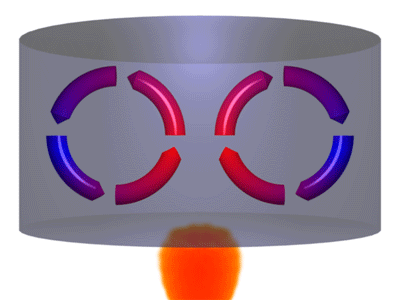

La termodinámica es la rama de la física que describe los estados de equilibrio termodinámico a nivel macroscópico. Constituye una teoría fenomenológica que estudia sistemas reales a partir de razonamientos deductivos, sin modelizar y siguiendo un método experimental.
 cerrar